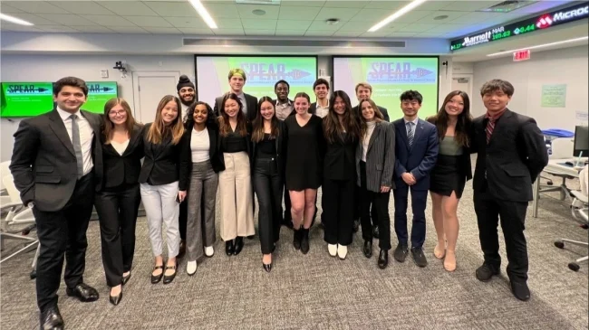
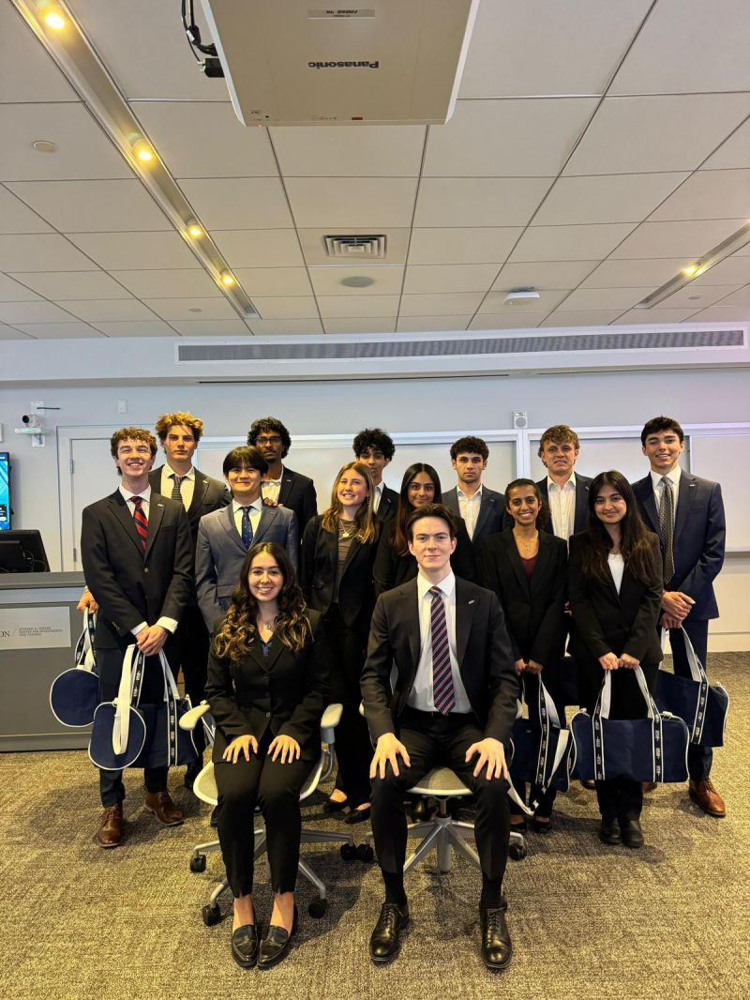

SPEAR Investment Banking
About SPEAR
SPEAR is a student-run investment banking preparation program at Babson College. Our name stands for Students Prepared Educated and Ready.
Established 2021
Our history
SPEAR was founded at Babson in spring 2021 by Tyson Corner ’22 to give students a structured way to prepare for investment banking recruiting. The original 13-week program combined technical training, financial modeling, and interview preparation, drawing on his recruiting and internship experience and input from industry professionals.
Built from the ground up by students, SPEAR brought technical resources, resume preparation, and recruiting guidance into one program. Members could prepare alongside peers and learn directly from students who had completed the recruiting cycle. Our purpose remains the same: to help members develop the knowledge, preparation, and professional relationships needed to pursue investment banking.


Shaped by each class
Each class contributes to SPEAR’s development. Former members return as facilitators and mentors, bringing firsthand experience from recruiting and working in banking. They lead sessions, share practical guidance, and connect members with alumni who can offer perspective on the industry.
We use feedback from members and facilitators throughout the semester to improve the sessions, assignments, and recruiting preparation. As interview expectations and recruiting timelines change, the program changes with them.
These relationships continue beyond the semester. Members become part of an alumni community that supports future classes through mentorship, mock interviews, and capstone presentations.
Who can join
The program is designed for second-semester freshmen and first-semester sophomores, allowing students to prepare ahead of the investment banking recruiting cycle. Prior finance experience is not required.